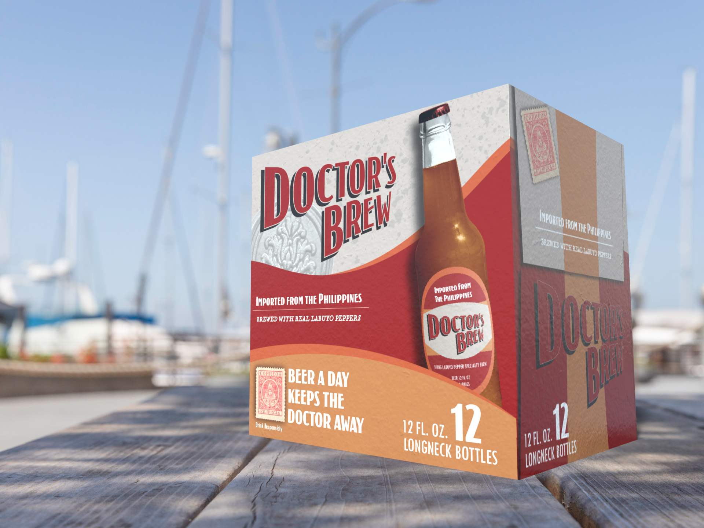

Brewed With Real Labuyo Peppers
Whether its to wind down after a long day or to spice up a great party, Doctor's Brew is the perfect drink for any occasion. A family recipe passed down generations throughout the Philippines, this specialty brew is carefully crafted using real Saling Labuyo peppers, preserving the unique sweet and sour taste while toning down the spice.
This was a package design project of a fictional beer company that I came up with. Using inspiration from hot sauces packaging, old time shipping companies, and the culture of the Philippines I created bottle and case designs.
